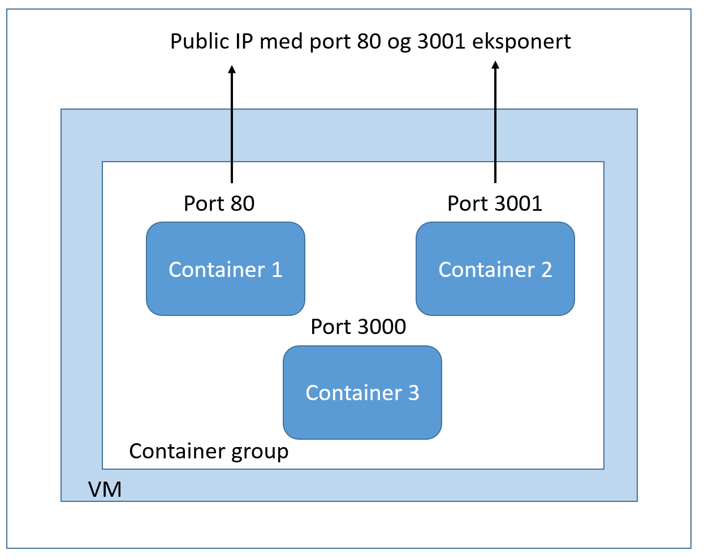
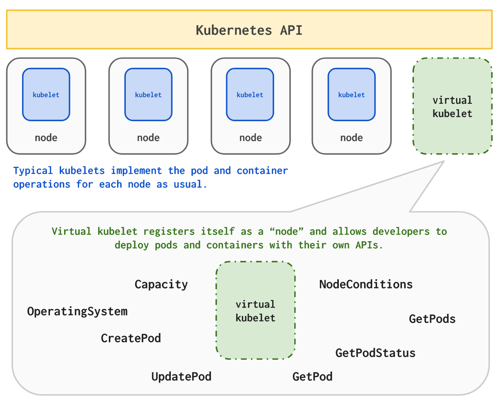

Azure Container Instances

Kristian Johannessen
Frokostmøte Serverless vs Containers
Containere i Azure

Azure Container Instances
- Ingen VM'er
- Bring your own container
- Custom cpu og minne
- Betal pr sekund
⚡ Serverless ⚡
⚡ Demo-time ⚡
Container group

Filvolum
"resources":[{
...
"properties": {
"containers": [{
"name": "slides",
...
"volumeMounts": [{
"name": "myvolume",
"mountPath": "/slides"
}]
...
}
}],
"volumes": [{
"name": "myvolume",
"azureFile": {
"shareName": "slideslocation",
"storageAccountName": "[parameters('storageaccountname')]",
"storageAccountKey": "[parameters('storageaccountkey')]"
}
}]
...
Orkestrering
- Håndterer enkeltcontainere
- Tradisjonelle orkestreringsløsninger på toppen
- virtual-kubelet: https://github.com/virtual-kubelet/virtual-kubelet
Orkestrering

Fremtiden
Fremtiden
- Første av sitt slag fra en av "de store"
- "Uendelig skalering"
- Kontroll på kostnader
- Scheduled tasks
- Mindre vendor lock-in